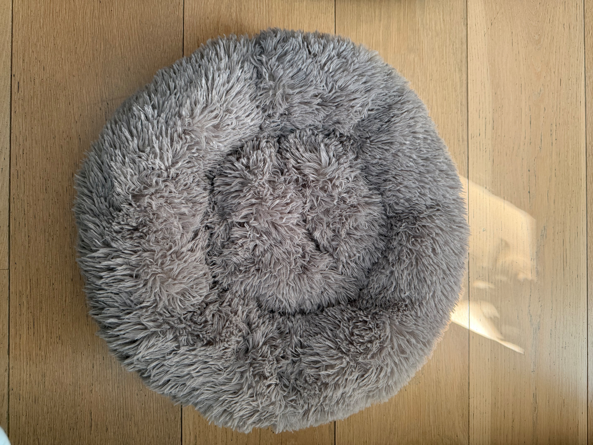

📝🐱The Melon, the Sunbeams and the Suspicious Painter
Every morning, I begin my duties with a thorough inspection of the kitchen.
Some cats rush about demanding breakfast. I prefer to position myself elegantly on the kitchen worktop and allow breakfast negotiations to develop at their own pace. A true ruler never appears desperate. She simply sits near the food cupboards and looks increasingly disappointed.
This particular morning, the sun was shining through the stained glass, scattering warm, coloured beams across my white fur. Naturally, I placed myself directly in the finest patch of light.
Good lighting is essential when one is conducting important household business.
Beside me sat a melon.
I settled slightly behind it, with only my ears visible above the top. From the humans’ point of view, the melon had suddenly grown two small white ears.
They found this extremely amusing.
I allowed them their little moment.
In reality, I was testing a new surveillance technique: agricultural camouflage. No visiting sparrow, passing neighbour or unauthorised kitchen snack would ever suspect that the melon was being supervised by senior management.
Later that day, one of my humans presented me with a Vitakraft stick.
Now, I am normally a calm and dignified lady. I believe in patience, good manners and measured responses.
But there are certain delicacies for which one might, purely hypothetically, commit a minor act of treason.
The Vitakraft stick is one of them.
I took possession immediately and conducted a full quality inspection. The flavour was excellent, the texture satisfactory and the human’s delivery speed just within acceptable limits.
I awarded several continuing education points.
However, there was no time for a prolonged celebration. The outside painter had arrived.
A stranger.
Near my house.
With ladders.
Clearly, this required my personal attention.
I moved to the nearest window and watched him carefully. Every brushstroke was monitored. Every movement was recorded. Every suspicious bucket was examined from a safe and comfortable distance.
The humans claimed he was simply painting the outside of the house.
That is exactly what an outside painter would want them to think.
Fortunately, I remained on duty until the situation was under control.
By evening, the melon had been cleared of suspicion, the Vitakraft stick had vanished without witnesses, and the painter had completed his work under strict royal supervision.
Another successful day of household management.
Honestly, I do not know how my humans managed before me.
Yours, Mrs. Cotton 🐱🐾
A lovely quiet evening. My humans are in front of the television, while I have claimed the canapé, as is only proper.
The household is calm, the cushions are comfortable, and all royal duties are complete for today.
Yours, Mrs. Cotton 🐱🐾
📝🐱The Sofa Armrest Investigation
Yesterday, my household received a specialist visitor.
A furniture restorer arrived to inspect the sofa armrest, which bears an important piece of historical artwork created by Snickers. My humans refer to it as “damage”. I prefer the more accurate term: an original mixed-media installation exploring texture, ownership and feline determination.
Snickers, a distinguished grey tabby who ruled this household for eighteen and a half years, clearly believed that an ordinary sofa required artistic direction. She therefore devoted herself to improving one particular armrest, thread by thread, with the patience of a master craftswoman.
The restorer examined her work very carefully.
He looked at it from several angles. He touched the fabric. He considered the structure beneath it. My humans stood nearby with the solemn expressions usually reserved for museum curators discussing the restoration of a national treasure.
I supervised from a suitable distance.
Naturally, I was interested in the professional assessment. Not because I have ever scratched a sofa myself, of course. I merely believe that a responsible head of household should understand all aspects of furniture conservation.
The restorer explained what could be repaired, replaced and strengthened. My humans listened attentively, although I noticed that nobody asked the most important question: how much of Snickers’ original artistic vision should remain visible for future generations?
Restoration is a delicate matter. Remove too much and you erase history. Remove too little and visitors may continue to ask whether the sofa was attacked by a very small, highly focused tiger.
I believe a tasteful compromise is required.
The armrest should be made comfortable and respectable again, while retaining perhaps one tiny thread as a memorial to Snickers and her uncompromising approach to interior design.
As for me, I remain entirely innocent in all furniture-related matters. Any marks discovered during future inspections will require a separate investigation, proper documentation and considerably more evidence.
Until then, I shall continue my duties as guardian of the sofa.
From the softest cushion, naturally.
Yours, Mrs. Cotton 🐱🐾
📝🐱Household Policy Update: The Approved Sleeping Places
There appears to be some confusion in my household regarding sleeping arrangements.
My humans seem to believe that I have “a bed”.
This is technically correct in the same way that Buckingham Palace technically has “a chair”. One does not restrict oneself unnecessarily.
As head of the household, I am responsible for inspecting every possible resting location. The sofa must be tested. The armchair must be assessed. Freshly folded laundry requires immediate quality control. Human pillows must be checked for softness, warmth and whether they have been positioned inconveniently close to a human head.
This is not indecision. It is governance.
My humans have also developed the curious habit of saying things such as, “I was sitting there.”
I fail to see the relevance.
A chair is not occupied merely because a human was sitting on it moments ago. Once vacated, it returns to royal ownership. This is basic household law and really should have been covered during their initial training.
Naturally, certain sleeping places are more desirable when they are urgently required by someone else. A laptop bag becomes especially comfortable five minutes before departure. A clean jumper is at its finest just before it is worn. The centre of the bed reaches peak quality when both humans are attempting to sleep.
Timing is an important part of leadership.
For clarity, I have now approved the following locations for my personal use: all chairs, all cushions, both sides of the bed, the middle of the bed, any blanket currently in use, all freshly laundered clothing and any cardboard box entering the premises.
My actual cat bed remains available for decorative purposes.
I trust this policy update will prevent further misunderstandings.
Yours, Mrs. Cotton 🐱🐾

📝🐱A Thought from the Throne
My humans often ask why I stare at them from across the room.
I am not staring.
I am conducting a performance review.
So far, there is room for improvement, particularly in the areas of snack distribution, door-opening speed and respect for occupied chairs.
Still, I remain hopeful.
Yours, Mrs. Cotton 🐱🐾
📝🐱The Royal Soup Signal
My humans have recently noticed that, when I am presented with a deliciously cold soup during warm weather, my tail begins to tick and pulse.
They appear to find this mysterious.
It is not mysterious. It is communication.
A rapidly trembling tail would suggest excessive excitement, which would be undignified. A completely still tail, however, might imply that I had failed to notice the arrival of refreshments. Therefore, I employ a subtle rhythmic movement of the tip.
It means:
“The temperature is acceptable.”
“The aroma has been noted.”
“You may place the bowl before me.”
“And yes, your annual performance review is improving.”
Humans often wag entire limbs when pleased. They clap, wave, dance and occasionally announce that something is “absolutely lovely”. I prefer efficiency. A few precise taps of the tail communicate everything required without compromising my royal composure.
The pulsing also helps me concentrate. Receiving soup is not merely eating. It involves inspection, temperature assessment, portion evaluation and careful consideration of whether a second serving should be authorised.
During hot weather, cold soup is particularly important. I am a white indoor cat wearing a permanent fur coat. I cannot simply remove a cardigan or complain dramatically beside an electric fan. My cooling arrangements must therefore be handled by trained household staff.
So when my tail begins ticking, my humans should not stare.
They should take notes.
The signal means that their chilled soup initiative has received provisional royal approval.
Provisionally, of course. Continued approval may require another bowl.
Yours, Mrs. Cotton 🐱🐾
📝🐱The Importance of Midnight Zoomies for Fitness and Morale
There comes a moment in every well-managed household when the lights are low, the humans are settled, and peace appears to have been declared.
This is, naturally, the ideal time for high-speed operations.
My midnight zoomies are not random. They are a carefully structured programme designed to maintain my physical condition, sharpen my reflexes and remind the household that authority remains fully operational after dark.
The route is selected with precision. I begin in the bedroom, accelerate through the hallway, perform a controlled turn beside the living room furniture and conclude with an impressive leap onto a strategically chosen surface. Sometimes this surface contains a sleeping human. That is not poor planning. It is an advanced morale exercise.
My humans occasionally wake with a startled expression, as though an indoor cat travelling at considerable speed is somehow unexpected. This shows that their continuing education remains incomplete.
Night-time exercise offers several important benefits. It keeps the legs strong, the whiskers alert and the mind focused. It also prevents complacency among staff. A household that knows its ruler may thunder through the corridor at any hour is a household that remains disciplined.
There is also the matter of morale. During the day, my humans are burdened with work, errands and various unnecessary concerns. At night, I provide excitement, movement and the unforgettable sound of paws racing across the floor.
This is not disruption. It is enrichment.
After completing my fitness programme, I usually stop suddenly, wash one shoulder and look entirely innocent. Any suggestion that I have caused chaos is based on circumstantial evidence.
I then retire to bed, refreshed and satisfied, while my humans attempt to understand what has just happened.
They need not worry. Their queen is fit, morale is high, and the kingdom remains secure.
Yours, Mrs. Cotton 🐱🐾
📝🐱Household Policy Update: Touching Is a Privilege, Not a Subscription
I feel it is time to address a matter which continues to confuse my humans.
Apparently, they have noticed that when my food is being served, I am perfectly happy to be picked up, stroked, cuddled and generally admired at close range.
Quite right too.
At mealtimes, I am operating under special diplomatic conditions.
Food is being prepared. Bowls are moving. Cupboards are opening. Important smells are circulating through my household. This is not the moment for unnecessary distance between senior management and catering staff.
So yes, during food service, my humans may pick me up.
They may stroke me.
They may hold me close.
I may even appear unusually tolerant while inspecting the situation from their arms.
This is entirely normal.
I am simply maintaining direct oversight of the catering department.
However, once the meal has been served and consumed, normal household regulations immediately resume.
And under normal regulations, I prefer my humans to remain at a respectful distance.
Not because I do not love them.
Good heavens, no.
I love them enormously.
From over there.
The difficulty is that humans have developed a rather strange idea about affection. They seem to believe that because a cat enjoyed being stroked at 8:03 in the morning, this automatically grants them touching rights at 10:17, 13:42 and again during an important afternoon sleep.
It does not.
Affection is not a season ticket.
There is a very simple system in my household.
When I walk towards my humans and stop beside them, I am available.
When I stand close enough to be touched, permission may reasonably be assumed.
When I lean against a leg, present my head or remain in place after first contact, the interaction may continue.
This is what we call a clear application procedure.
By contrast, when I am sitting peacefully three feet away, this does not mean:
“Please come and fetch me.”
When I am walking through the room, it does not mean:
“Excellent opportunity for an unexpected cuddle.”
And when I am asleep, it most certainly does not mean:
“Let us see how much affection we can insert into this situation before she wakes up.”
No.
The rule is beautifully simple.
I come to you.
That is how I show trust.
That is how I choose contact.
That is how civilised affection works.
My humans are, of course, still learning.
Sometimes I see one of them looking at me from across the room with that particular expression. The one that says, “She looks so soft.”
Naturally I look soft.
I am white, elegant and exceptionally well maintained.
That is not an invitation.
It is a visual experience.
Please enjoy it responsibly.
So let us put an end to this human confusion once and for all.
Yes, you may cuddle me while food is being served.
Yes, I may stand beside you later and request affection.
And yes, for the rest of the day I may prefer a tasteful amount of personal space.
These things are not contradictory.
They are called boundaries, timing and excellent household management.
Honestly, I do not know why this is so difficult.
Still, every misunderstanding is a training opportunity.
My humans have earned another continuing education point.
Not enough for independent touching privileges, obviously.
But progress is progress.
Yours, Mrs. Cotton 🐱🐾
📝🐱A Gentle Reminder from Management
The temperature is rising.
I was promised air conditioning.
My humans are therefore kindly requested to stop discussing, comparing and “looking into options”, and proceed directly to installation.
I am a white indoor cat. I do not intend to spend the summer slowly roasting in my own kingdom while two adults stand near a fan saying, “It’s actually quite nice with the windows open.”
Consider this an official reminder.
Yours, Mrs. Cotton 🐱🐾
📝🐱Settling In Nicely, Thank You Very Much
On 11 March, I was collected from the shelter and brought to what my humans rather casually call “home”.
I prefer to think of it as my new location.
Naturally, one does not simply move into a property without carrying out a full inspection. There are standards to maintain, comfort levels to assess, staff to observe and, most importantly, several highly suspicious corners that require immediate investigation.
I am pleased to report that I have settled in extremely well.
The location is acceptable.
More than acceptable, actually.
The humans are also beginning to settle in nicely.
They do try.
I can see that.
There are plenty of toys, which suggests that someone has at least attempted to prepare for my arrival. Mice, balls, dangling things, rolling things and various brightly coloured objects apparently designed by committees who have never actually met a cat.
And yet, after careful testing by senior management, my favourite toy is…
a simple ping-pong ball.
Of course it is.
It rolls beautifully, changes direction without warning, disappears under furniture and creates exactly the right amount of household disruption. A highly sophisticated piece of equipment, despite what the humans may think.
I have also explored the entire house.
Thoroughly.
Professionally.
Room by room.
This includes the bedroom, where I am apparently “not allowed”.
An interesting policy.
I reviewed it personally.
Several times.
I remain unconvinced.
Still, my humans are new to this arrangement and require continuing education points. One cannot expect perfection immediately.
There is, however, one unresolved matter.
I have been informed that the house also has an attic.
And indeed, there is one door that has remained firmly closed since my arrival.
One door.
Always closed.
Naturally, I have noticed.
I notice everything.
What is behind it? Boxes? Dust? Ancient treasures? Secret emergency supplies of cat food? A second, even better household?
At present, I cannot say.
But I have only lived here since 11 March.
There is time.
The location is good.
The humans are trying.
The ping-pong ball is excellent.
And the closed door?
Well.
Every kingdom has one mystery.
For now.
Yours, Mrs. Cotton 🐱🐾
📝🐱A Brief Household Announcement
I would like to confirm that everything in this house remains under control. Naturally, my humans believe they are making decisions, organising furniture and planning their day. I find this adorable. For efficiency, I simply sit in the middle of whatever they are doing and supervise.
Standards must be maintained.
Yours, Mrs. Cotton 🐱🐾
📝🐱The Exterior Decorator Requires Close Supervision
Today, my humans witnessed what they have rather foolishly described as “me getting on very well with the exterior painter”.
I must correct the record.
There was no affection involved.
Yes, I gave him several head bumps. This was not cuddling. It was a professional identification procedure. A contractor entering my estate must, naturally, be marked with the official household scent before being permitted to continue his duties.
Yes, I also ran past him at considerable speed.
Again, this has been misunderstood.
I was conducting a series of rapid-response perimeter checks, designed to assess his reflexes, general awareness and ability to remain calm when senior management suddenly appears at ankle height.
He performed reasonably well.
I may also have passed him several times for no obvious reason. There was, of course, an obvious reason. I was monitoring workflow, inspecting access routes and making certain he understood that although my humans may have hired him, he was working on my building.
At one point, I believe he may even have thought I liked him.
Charming.
I do not “like” contractors. I evaluate them.
Still, he has shown promise. He appears polite, accepts surprise inspections without complaint and has so far resisted the human tendency to interfere with my movements.
Therefore, I have granted him temporary status as an Approved Exterior Maintenance Person, Second Class.
Further head bumps may occur.
Strictly for administrative purposes.
Yours, Mrs. Cotton 🐱🐾
The kingdom is officially closed for the evening. My humans may continue with whatever it is they do, but I have important napping duties to attend to. Do try to keep the noise down while I recharge for tomorrow’s household inspections.
Yours, Mrs. Cotton 🐱🐾
📝🐱A Rare Case of Humans Thinking Properly
As Head of Household Strategy, Senior Director of Sofa Allocation and sole authority on whether a meeting could have been a nap, I am naturally cautious when recommending human work.
Standards must be maintained.
However, during one of my routine inspections of the internet, I came across DESIGN THINKING! Comic, and I must admit something rather unusual happened.
I approved.
This is a comic about design, technology, work, AI, meetings, engagement, hiring and all the other fascinating systems humans have invented to make simple things require twelve stakeholders and a colourful diagram.
Naturally, I felt seen.
The humour is clever, painfully observant and often has that excellent quality of making you laugh first and then stare quietly into the middle distance because, regrettably, it is true.
But my relationship with The Artist is, I should point out, not merely professional admiration from afar.
The Artist has made my portrait.
Yes.
My portrait.
This came about because my humans, after years of continuing education, finally demonstrated a promising moment of initiative. They had been following the work of DESIGN THINKING! Comic and, in a rare example of independent thought, wondered whether The Artist might consider capturing my likeness.
I allowed them to enquire.
One must encourage progress.
Naturally, the project required careful preparation. Suitable photographs had to be selected. My colouring, expression and general air of senior authority had to be properly represented. I supervised this process closely, mainly by being unavailable whenever anyone wished to take a useful photograph.
This is called maintaining creative tension.
Then came the extraordinary part.
The Artist looked at me, understood the brief and created a portrait that somehow captured not merely a white cat, but the unmistakable presence of a household executive who has had quite enough of everyone’s excuses.
I was impressed.
My humans were delighted.
I remained professionally composed.
There may have been a moment of prolonged staring at the finished artwork, but this should not be interpreted emotionally. I was conducting quality assurance.
The portrait now has a very special place in my household, because there is something rather wonderful about being seen through the eyes of an artist whose work you already admire.
Especially when those eyes correctly identify you as management.
So yes, I have a certain fondness for DESIGN THINKING! Comic.
The work is sharp, clever and wonderfully observant about the strange world humans have created for themselves. A world of buzzwords, professional anxiety, technology, creative ambition and meetings in which someone inevitably says, “Let’s take a step back.”
I have long maintained that humans require continuing education points. Some need more than others. A great many, frankly, are operating on provisional licences.
So I consider DESIGN THINKING! Comic useful reading for anyone involved in design, technology, creative work, corporate life, or the mysterious professional practice of saying “interesting” when one actually means “absolutely not”.
My household has therefore received an official recommendation.
Visit designthinking.lol here.
Read a few comics.
Then return to your duties with improved judgement, a healthier suspicion of buzzwords and, ideally, a renewed understanding that maximum engagement is not the same thing as being useful.
I have been explaining this to my humans for years.
Usually by sitting directly on the laptop.
And to The Artist, who managed to capture my likeness with such alarming accuracy:
You have my royal approval.
Please do not become difficult about it.
Yours, Mrs. Cotton 🐱🐾
📝🐱That Tiny Meow at the Door
Apparently, I make a tiny little meow when one of my humans enters the room. A “mini-meow”, they call it. They seem to think I am behaving like a receptionist.
I beg your pardon.
I am not sitting here waiting to say, “Good afternoon, welcome back, do you have an appointment?”
I am the appointment.
The small sound upon entry is, in fact, part of my household security and quality-control procedure. You see, whenever a human reappears, several matters must be established immediately.
- Is this the same human who left?
- Have they brought anything?
- Should they have brought anything?
- Why are their hands empty?
- Have they been in another room without authorisation?
And, most importantly, has anything happened elsewhere in my household that may require senior feline intervention?
A full meow would be excessive. I am not running a fish market.
The tiny meow is simply an audible check-in signal. “Noted. You have arrived. Your performance is now under review.”
That is all.
Sometimes the human answers me. This is encouraging. It shows they understand that communication within a well-managed household must flow both ways, even if one party is considerably more qualified than the other. Naturally, they believe we are having a little conversation.
Sweet.
In reality, I am confirming that they remain responsive to basic commands. Continuing education points may be awarded. So no, I am not the receptionist. I am the Head of Household Operations acknowledging the return of junior staff.
Briefly.
Politely.
And with exactly as much enthusiasm as the situation deserves.
Yours, Mrs. Cotton 🐱🐾
📝🐱The Pork-Tail Protocol - Why the Curl Means the Staff May Remain. For Now.
There are, in every well-run household, certain signals from senior management that must be understood without the need for a formal memorandum.
Mine is the Pork Tail.
This occurs when one of my humans applies a satisfactory degree of scratching to my lower back, just above the tail. At that precise moment, my tail rises and curls into a neat little loop.
The humans find this adorable.
Naturally, they have misunderstood the seriousness of the matter.
The Pork Tail is not a party trick. It is not an invitation to squeal, “Look at her little curly tail!” in a voice normally reserved for babies and unusually shaped vegetables.
It is an official performance indicator.
When the curl appears, I am communicating several things at once.
Firstly: the location is correct.
This is important. Humans have a tendency to scratch approximately where requested and then expect full marks for effort. I do not assess effort. I assess outcomes.
Secondly: the pressure is acceptable.
Too light, and one wonders whether they are actually committed to the task. Too firm, and the entire operation begins to resemble amateur upholstery cleaning.
But when the pressure, rhythm and location align, the Pork Tail emerges.
This is my way of saying:
Yes. Continue.
Also:
You have, against considerable odds, understood the assignment.
And, perhaps most generously:
Your position within this household is currently secure.
Currently.
I should stress that the curl is not merely physical. It is emotional messaging. I am projecting satisfaction, confidence and the serene authority of a monarch whose staff have finally stopped pressing the wrong buttons.
I want my humans to see a cat who is pleased, but not overwhelmed.
Grateful, but not dependent.
Relaxed, but still entirely capable of cancelling privileges at short notice.
The Pork Tail therefore represents the perfect balance between affection and governance.
Do my humans understand this?
Not completely.
One of them tends to interpret the curl as evidence that I am “very happy”.
This is a sweet, simplified version suitable for beginners.
The other sometimes laughs and says I look like a little piglet.
This has been noted in the personnel file.
Still, I must acknowledge progress where progress is due. Both humans now understand that when the Pork Tail appears, they should not stop.
This is perhaps the most important lesson they have learned.
Stopping at the appearance of the curl would be like receiving a five-star review and immediately closing the restaurant.
So yes, the Pork Tail means pleasure.
It means approval.
It means the human hand has, for one brief shining moment, achieved professional competence.
And it means the staff may remain.
For now.
Yours, Mrs. Cotton 🐱🐾
📝🐱Household Policy Update: The Post-Dinner Dash Is Not Madness, It Is Procedure
Every now and then, my humans witness one of my finest administrative manoeuvres: I finish a respectable meal, wash precisely one paw for dramatic effect, stare briefly into the middle distance, and then sprint through the house as if the curtains have caught fire and I am the only qualified evacuation officer.
Naturally, my humans look concerned.
“Why is she running?”
“Is something wrong?”
“Did she see something?”
Yes. I saw destiny. And it required speed.
Let me explain, for the benefit of less experienced household staff. After a good meal, a cat may suddenly be overcome by what experts, servants and senior feline management call the zoomies. In my household, I prefer the official term: The Royal After-Dinner Gallop.
It is completely normal.
A fine meal provides energy. Energy must be distributed across the premises. The carpet must be tested. The hallway must be inspected at high velocity. The sofa must be approached, reconsidered and abandoned. A chair may need to be leapt over for reasons of national security.
This is not chaos. This is logistics.
The same can happen after a successful visit to the, shall we say, Porcelain-Free Executive Sand Office. My humans call it the litter tray, which is a dreadfully dull name for such an important department. I prefer The Gravel Throne, The Biscuit Crumble Bureau, or, in formal documents, The Department of Private Excavations.
And sometimes, after completing a particularly meaningful piece of paperwork in that department, a cat must leave the scene at once.
This, too, is normal.
Humans may describe it as “running away after doing a big poo”. I consider that phrase vulgar and insufficiently ceremonial. In this house we call it a Major Diplomatic Deposit, a Grand Pebble Declaration, or, when the windows are open, a Matter Requiring Immediate Ventilation.
Why the sprint afterwards? Several excellent reasons.
First, there is relief. The body says, “Well done, Your Majesty,” and the legs reply, “Shall we celebrate?” Naturally, one does not decline one’s own parade.
Second, there is instinct. In the wild, one does not linger near the evidence. One conducts one’s business, covers the paperwork and exits the meeting room with dignity and pace.
Third, there is household morale. My humans need entertainment. They pretend they do not, but I have seen them watching television for hours, so clearly their standards are flexible.
And finally, there is leadership. A sudden sprint reminds everyone that I am fit, alert and fully in charge of this indoor kingdom. Curtains, rugs, doorways and unsuspecting slippers must all understand the chain of command.
So when I rocket through the living room after supper or depart the Gravel Throne at a speed normally reserved for emergency vehicles, my humans should not panic. They should admire the technique.
No shouting. No fussing. No “What on earth are you doing?”
The correct response is quiet respect.
Perhaps applause, but tasteful.
Yours, Mrs. Cotton 🐱🐾
One human has gone to an amusement park. The other is behind a laptop, doing what appears to be nothing at all. I, meanwhile, am gracefully touched by golden sunbeams on the windowsill. At least one member of this household understands how to spend a day properly.
Yours, Mrs. Cotton 🐱🐾
📝🐱Household Policy Update: Cleaning Must Not Interrupt Royal Operations
There are certain truths in life which even the most stubborn human should have mastered by now.
The sun rises. Bowls must be filled. Cushions are not for sitting on but for careful occupation. And cleaning, while occasionally necessary for the maintenance of my kingdom, must never, under any circumstances, happen at the exact moment I have arranged myself into a position of supreme importance.
Yet here we are. It is Saturday.
Or possibly Sunday, because my humans have a flexible relationship with discipline.
Either way, I can sense it. There is a change in the air. A drawer opens with false innocence. A cupboard door creaks. One of my humans says something suspiciously cheerful like, “Shall we quickly do the house?”
Quickly.
That is how you know disaster is coming.
Humans always clean at the wrong moment. I may have spent the entire morning available for consultation, supervising from the sofa, the chair, the hallway, the other chair, and briefly from inside a cardboard box of no official purpose. Did they clean then? No. They waited until I had entered a deep strategic rest, with one paw tucked beneath me and my tail placed at a precise angle of authority.
Then they began.
The vacuum cleaner appeared.
Now, my humans have developed a rather flattering but entirely incorrect theory. They believe I am afraid of the vacuum cleaner.
Afraid.
Of that rolling, groaning, overdramatic wind-machine with a pipe.
Please.
I am not afraid of the vacuum cleaner. I simply refuse to attend meetings with equipment that has no manners, no volume control, and no understanding of personal boundaries. When I leave the room, it is not fleeing. It is a controlled diplomatic withdrawal.
There is a difference.
A queen does not “run away”. A queen relocates the government to a safer administrative zone.
Usually under the lounge chair, upstairs in the office of one of the humans.
This is not panic. This is continuity planning.
The real cat-reason for leaving is obvious to anyone with whiskers and a functioning sense of dignity. The vacuum cleaner disturbs important scent records. It barges across borders. It removes valuable floor information, including where I walked, where I paused, where I considered sitting but decided against it, and where a microscopic crumb may still be undergoing review.
Humans see dust.
I see archives.
Of course, I do understand why cleaning must happen. My humans are large, shedding creatures with outdoor shoes, snack habits, and a mysterious ability to create crumbs in rooms where no food has officially been served. If I did not permit cleaning, the household would eventually collapse into a soft grey layer of human evidence.
So yes, cleaning is allowed.
But the timing is always wrong.
They clean when I am sleeping.
They clean when I am inspecting a sunbeam.
They clean when I have just approved the exact position of a blanket.
They clean immediately after I have rubbed my face lovingly along a table leg, thereby renewing its legal status as part of the Cotton Estate.
Worst of all, they clean when I have finally arranged my toys into what is clearly not “a mess”, but a working display of tactical readiness.
Then one of them says, “Let’s tidy this up.”
Tidy. This. Up.
I have seen better decision-making from a lettuce.
There are things my humans are welcome to clean. The kitchen floor, for instance, because that is where they sometimes drop interesting items and then, tragically, remove them before I can complete my assessment. The bathroom may also be cleaned, as it contains much human mystery and far too much moisture. Windowsills may be dusted, provided they are returned to the correct standard for sitting, judging and staring at absolutely nothing.
But there are also areas which should not be “improved”.
My favourite blanket does not need washing every time it achieves its proper Cotton-approved texture. That texture takes time. It is a mature blend of warmth, scent, fur and authority. To remove it is cultural vandalism.
The sofa does not require constant straightening. Cushions placed at odd angles are not untidy. They are terrain. A flat cushion is a wasted cushion.
My toys should not be collected into a basket like criminals awaiting trial. If a mouse is lying in the hallway, it is because I have put it there for a reason. Possibly as a warning. Possibly as art. Possibly because I forgot. All three explanations are valid.
And the armrest of the sofa, I should add, remains a sensitive historical subject. Snickers, may she be remembered with affection and a slightly battered upholstery department, had her own approach to furniture management. I, naturally, would never do such a thing. Any marks currently visible are old, inherited, misleading, or the result of poor lighting.
A cat has her honour.
Still, despite the dreadful timing, the roaring machine, the blanket interference and the toy arrests, I maintain control. I supervise from a safe distance. I issue looks. I adjust my ears. I make it clear that points will be deducted from their continuing education records.
My humans may believe they are cleaning the house.
How sweet.
In reality, they are participating in a carefully monitored exercise in obedience, movement and humility. I allow them to push the noisy beast around because it keeps them busy, builds character, and occasionally reveals lost treats beneath furniture.
When the vacuum is finally returned to its cupboard of shame, I emerge.
Slowly.
Regally.
I inspect the damage. I sniff the corners. I test the sofa. I restore one toy to the middle of the room, just to bring the composition back into balance. Then I sit down in the cleanest possible spot and begin shedding immediately.
Not from malice.
From leadership.
A home must never look too managed. It should show signs of life, comfort and one white cat in charge of quality control.
So yes, my humans may clean this weekend.
They may polish. They may vacuum. They may flap about with cloths and sprays and that expression humans wear when they think they are being productive.
But they should remember one thing.
There is no correct time to clean.
There are only times when I am gracious enough to tolerate it.
Yours, Mrs. Cotton 🐱🐾
📝🐱Household Policy Update: The Difference Between “My Basket” and “Anything I Happen to Be Lying On”
There appears to be some confusion in my household.
Not from me, obviously.
I understand the property laws perfectly. They are elegant, practical and based on several centuries of feline common sense. My humans, however, continue to believe that “my basket” refers to the thick, fluffy object placed under the table for my alleged comfort.
How sweet.
How entirely mistaken.
The basket under the table is, I admit, visually promising. It is soft. It is warm-looking. It has clearly been purchased with optimism, hope and a complete lack of consultation. My humans presented it as though they had solved the ancient mystery of where a cat might sleep.
I inspected it once.
Naturally, I did not get in. One must never encourage overconfidence in staff.
The same applies to the cushions previously used by Spook, Snickers and Severus. I respect the senior ladies who ruled before me, and I acknowledge their excellent taste in many matters. Spook, Snickers and Severus clearly ran a competent administration. Snickers, I understand, also conducted a long-term structural review of the sofa armrest. I, of course, would never do such a thing. Any suggestion otherwise would be slander, and possibly lint.
But their cushions are their cushions. Historical artefacts, if you will. Museum pieces. I am not here to repeat the past. I am here to govern the present.
My humans, bless them, think comfort is about softness.
This is why they will never truly understand.
A proper sleeping place must meet a number of strict royal requirements. It must offer visibility, strategic value, dignity, temperature control and the possibility of making a human say, “But why there?”
For example, the high place above the piano, in the window near the ceiling, is not merely a place to lie down. It is an observation tower. From there, I can supervise the entire kingdom, monitor bird activity, judge dust levels and remind everyone that gravity is something I respect but do not obey.
The mantelpiece is another excellent post. It has height, elegance and just enough danger to keep the humans humble. When I sit there, they look at me with the wide eyes of people who have suddenly remembered that they own fragile things. This is healthy for them. It counts towards their continuing education points.
The sofa is also acceptable, but only on my blanket. Not because the blanket was put there for me, obviously. That would be too simple. It is acceptable because I have personally approved it through repeated occupation, kneading and the occasional look of deep administrative satisfaction.
Then there is the pouffe by the sliding doors.
A masterpiece.
It provides light, warmth, garden surveillance and the opportunity to look slightly disappointed when nobody opens the door to a world I am not actually allowed to enter. As an indoor cat, I take my border-control duties very seriously. I do not need to go outside to manage the outside. That is what windows are for.
So let us clarify the policy.
“My basket” means: an object purchased by humans, placed in a sensible location, and therefore deeply suspicious.
“Anything I happen to be lying on” means: royal property, legally occupied, emotionally significant, and unavailable until further notice.
There is a difference.
The humans will never grasp this fully, because they believe ownership begins with buying things. A charming theory. Completely wrong, of course. In my household, ownership begins when I lower myself onto something and close my eyes.
At that point, the matter is settled.
A chair becomes a throne. A blanket becomes an estate. A pouffe becomes a seasonal residence. A windowsill becomes a command centre. The top of the piano becomes a cloud with excellent acoustics.
And the fluffy basket under the table?
That remains available.
For decoration.
Yours, Mrs. Cotton 🐱🐾

📝🐱 The Nespresso Protocol
There has been some loose talk in my household about a “Pavlov reaction”.
I should like to make it perfectly clear, before this rumour grows legs and starts shedding on the furniture, that I do not do dog behaviour.
I am Mrs. Cotton. I am a white indoor cat, sole child of the household, senior domestic executive, and absolute ruler of the living room. I do not “respond” to bells, machines, habits, or human routines. I conduct operational oversight.
The matter concerns the Nespresso machine.
At some point, during one of their better moments, my humans discovered that when they make coffee, I should receive a treat. This was not bribery. It was not training. It was certainly not the beginning of some embarrassing canine arrangement involving drooling and expectation.
It was policy.
A sensible household runs on clear procedures. My humans require coffee. I require appropriate recognition for supervising the coffee. Everyone benefits.
So now, when one of my humans walks towards the kitchen with that particular purposeful expression, I immediately take my position outside the kitchen door. This is not because I have been conditioned. It is because I am punctual.
One cannot allow humans to operate hot beverages unsupervised. They become distracted. They press buttons. They stand about inhaling steam as though they have invented civilisation. Someone has to maintain standards.
That someone, naturally, is me.
I sit neatly by the kitchen door, composed and magnificent, while the machine begins its little performance. It grumbles. It splutters. It produces coffee. Frankly, for an appliance with no fur, no tail, and no visible understanding of household hierarchy, it makes a great deal of noise.
Still, it has one redeeming quality.
It announces that my treat is due.
Not in a Pavlovian way. I repeat: absolutely not. The machine is not commanding me. I am allowing it to serve as an audio reminder for my staff.
Once the coffee has been prepared, I lead the next phase of the operation. This involves escorting my human to the correct location in the living room, where the treats are kept. I know exactly where they are, of course. I have known all along. I maintain a complete mental inventory of every edible item in the kingdom.
My humans sometimes appear surprised by this.
“Look at her,” they say. “She knows where the treats are.”
Yes. Obviously.
I also know where the comfortable blankets are, which chair receives the afternoon sun, which cupboard is opened too rarely, and which human is most likely to weaken under direct eye contact. This is not magic. It is governance.
When we arrive at the treat location, I apply the appropriate level of royal presence. Not begging, you understand. Begging is terribly undignified. I simply sit, look beautiful, and allow the silence to become increasingly informative.
My humans then produce the treat.
Excellent.
At this point I may accept it with grace, or I may inspect it first, depending on quality, size, mood, lighting conditions, and whether the staff member has recently earned sufficient continuing education points. One must keep standards flexible but firm.
I have heard humans describe this sequence as “she has learned that coffee means treat”.
How sweet. How simple. How human.
The truth is that I have successfully trained them to associate coffee with my compensation package. Every time they make a Nespresso, they remember their obligations. Every time they walk into the kitchen, they are reminded that management is watching. Every time they return to the living room, they understand that the treat department must be consulted.
This is not Pavlov.
This is leadership.
And if the Nespresso machine happens to make a sound which helps my humans remember the established protocol, then I shall not object. Even the loud little coffee box may contribute to the smooth running of my kingdom.
After all, a well-managed household depends on routine, discipline, and a white cat sitting exactly where she ought to be, ensuring that nobody forgets who is really in charge.
Yours, Mrs. Cotton 🐱🐾
📝🐱 It wasn't me
There comes a time in every respectable household when one must address matters of upholstery, legacy, and completely unfair accusations.
I am, of course, speaking of the armrest of the sofa.
Now, I have been informed, by the usual unreliable human sources, that this particular armrest did not simply “wear out”. Oh no. Apparently, it was subjected to what can only be described as a long-term artistic scratching project by Snickers, one of the former managers of this household.
A bold woman. A strong woman. A woman with a clear vision for interior design.
The humans say the sofa has already been reupholstered once before. Once. As though that should shock me. Frankly, if you invite cats into a home and then provide large fabric-covered furniture at perfect claw-height, you must expect a certain level of creative contribution.
However.
Since Snickers has now gone to heaven, where I assume all sofas are made of scratchable velvet and no one says “No!”, the humans appear to believe the sofa may once again qualify for professional attention.
And this is where I must make my position very clear.
Since my official appointment on 11th of March, I have demonstrated nothing but dignity, restraint, and a deeply mature relationship with the sofa. Have I sat on it? Yes. Have I inspected it? Naturally. Have I walked across it like a queen crossing a balcony? Obviously.
But have I attached myself to the armrest like a tiny white demolition contractor?
Absolutely not.
I give you my cat’s honour, which is legally binding in all decent households and several sunny windowsills, that I shall not destroy the newly upholstered sofa. I shall not scratch it. I shall not hang from it. I shall not pretend it is a climbing wall, a personal gym, or an enemy that needs defeating at 3:17 in the afternoon.
Of course, I cannot be held responsible for any invisible mice, suspicious threads, or sudden emergencies involving one single claw that simply needed to stretch. These things happen in management.
But the sofa itself? Safe.
Probably.
So when the humans look at that poor ruined armrest and wonder who did it, I say only this, like Shaggy:
It wasn’t me.
And this time, unlike certain famous musical gentlemen, I actually have evidence.
I’ll keep you lot posted, Mrs. Cotton 🐱🐾

📝🐱Mrs. Cotton Reports: The Weather Has Finally Remembered Its Manners
At long last, the temperatures have dropped.
I do not wish to sound dramatic, but the recent heat was very much not approved by Management. And by Management, I obviously mean me: Mrs. Cotton, official household supervisor, window inspector, sofa commander, and full-time ruler of this establishment with a strong fist.
During the hot days, the humans made certain… adjustments. Windows were opened. Fans were deployed. Doors were discussed. And, most shockingly, I was occasionally allowed into areas of the house at night where I do not usually hold office.
Now, I understand why they did this. The heat was intense. The upstairs department required ventilation. The humans were trying their best, which is adorable and often a little confusing. But now that the weather has returned to something more civilised, I have been placed back in my rightful sleeping headquarters: the living room.
Some cats might complain.
I, however, am a strategic thinker.
Sleeping alone in the living room has many advantages. First of all, I do not have to wander around the house at night pretending to be busy. I can conserve energy for more important tasks, such as judging breakfast service, inspecting sunbeams, and suddenly deciding that the chair I ignored for three months is now my throne.
Secondly, the living room is the central command post. From here, I can monitor all household movement. If a human gets up for water, I know. If a mysterious noise happens in the kitchen, I know. If the sofa cushion is not positioned to my standards, I definitely know.
Thirdly, and most importantly, there are no sleeping humans taking up unnecessary space, breathing loudly, moving their legs, or making ridiculous noises. Honestly, I do not know how they get any rest with themselves around.
The humans did do one very good thing during the hot days: they gave me lovely cool soups to help me drink enough. These were acceptable. In fact, I would go as far as saying they were a valuable hydration initiative and should absolutely remain part of the household wellness programme.
The so-called cat milk, however, was a different matter.
I believe it may have been kitten milk, which is already suspicious. I am not a baby. I am a lady of status. I gave it a professional assessment and concluded: not fit for royal consumption. No, thank you. Please remove it from future planning documents.
So, in summary: cooler weather is welcome. The living room has once again become my private night-time kingdom. The soups may stay. The milk may leave. And the humans clearly require more training.
I will be assigning them mandatory Permanent Education Points immediately.
Topics include:
- “Hydration for Distinguished Cats”
- “Understanding the Difference Between Soup and Nonsense”
- “Why the Living Room Is a Throne Room After Dark”
and
- “Mrs. Cotton Is Not Wandering Aimlessly, She Is Conducting Strategic Patrols”
Progress will be reviewed at the next stand-up meeting. Attendance is compulsory. Purring is not guaranteed.
I’ll keep you all posted.
Yours, Mrs. Cotton 🐱🐾
📝🐱 The Royal Archives of Mrs. Cotton
Due to the rather dramatic heat this week, I decided it was best to conserve energy and conduct important indoor research from a horizontal position.
Naturally, this meant going through the humans’ photographs.
At first, I assumed the entire archive would be about me. A reasonable assumption, given my importance. But then I made a rather shocking discovery.
I am not the first cat to sit upon this throne.
There were four before me.
First, there was Snape. A black gentleman cat, very handsome and clearly serious about the mysterious arts of household supervision. He was only here for two years, which is far too short for any cat of importance, but I can tell from the way the humans remember him that he left very large pawprints.
Then came Spook — which means Ghost in English. A white lady, like me, proving that the humans have always had excellent taste. She lived to the grand age of fifteen and appears to have ruled with calm elegance, probably floating through the house as if every room had been designed especially for her.
After that, there was Snickers. A grey tiger lady who reached eighteen and a half, which is an extremely impressive career in human management. From what I have seen, she had the sort of wise face that says: I have trained these people for many years, and they are still not perfect.
And then there was Severus. A black British Shorthair lady with a very dignified look. Fifteen years of service, and clearly no nonsense. I imagine she ran meetings with firm paws, silent judgement, and excellent sitting posture.
But here is the important part.
Spook, Snickers and Severus did not rule separately. They ruled as a team.
A full management board.
Spook, probably responsible for elegance, atmosphere and mysterious appearances in doorways.
Snickers, Head of Experience, Comfort and Long-Term Human Training.
Severus, Director of Discipline, Strategic Silence and Serious Looks.
Together, they must have done the difficult early work. They softened the humans. They taught them where food must be placed, how cushions should be shared, when silence is required, and that the correct response to a cat entering the room is admiration.
So now I understand.
I did not arrive in an untrained home.
These cats prepared the kingdom.
They built the systems. They improved the humans. They made the way easier for me.
And now it is my duty to continue the legacy.
I shall honour Snape, Spook, Snickers and Severus by ruling with dignity, warmth, occasional stubbornness, and just enough chaos to keep the humans sharp.
Their work was not in vain.
The throne is safe.
Yours, Mrs. Cotton, has taken over management. 🐱 🐾
Ps. I included a photograph of these noble ladies on their thrones. Mind you, I’m not that white lady in the photograph.

📝🐱Mrs. Cotton and the Very Questionable Training Look
Of course I was taking Moo-Moo Longtail to training. A serious athlete must maintain discipline, focus, and a firm grip on one’s cow. Moo-Moo had been selected for advanced tail-control exercises, followed by a short but important dragging-across-the-floor session.
Then my humans looked at me and started laughing. Not a polite little chuckle. No. Actual laughing. Naturally, I paused the training programme and stared at them for an explanation. None was provided. Very unprofessional. If there was a problem with my technique, they should have raised it during the stand-up meeting.
Instead, they just pointed, laughed, and said things like “oh no” and “she has no idea.” No idea about what? I was simply standing there with Moo-Moo Longtail, fully prepared for combat practice, looking magnificent and operationally ready.
Humans remain difficult to manage. Training will continue.
Yours, Mrs. Cotton 🐱🐾

📝🐱 Training and Development
Living indoors is lovely, of course. There are soft blankets, reliable meals, warm spots, and humans who can be summoned when required. But it does mean I have to keep my skills sharp. A cat cannot simply lounge about all day looking beautiful. Well… technically she can. And I do. But one must also train.
To support my professional development, my humans gave me a stuffed cow.
Yes. A cow 🐮. With a very long tail. Not just a tail, really. A tail they normally don’t have. I studied this creature carefully and decided she needed a proper name.
So I called her Moo-Moo Longtail.
Moo-Moo Longtail and I quickly became training partners. Every day, we worked on important indoor-cat skills: pouncing, grabbing, rolling, kicking, surprise attacks, tail inspection, and the ancient art of looking innocent immediately afterwards.
I trained very hard. Perhaps too hard. After several excellent sessions, Moo-Moo Longtail began to show signs of wear. A little stuffing here. A small opening there. This was not damage. This was evidence of progress. Still, even the finest training partner sometimes needs medical attention. So I called a stand-up meeting with my humans.
I sat in the middle of the room with Moo-Moo Longtail beside me and gave them my clearest look a cat can give.
The meeting agenda was simple:
1. Cow broken.
2. Cow important.
3. Please fix cow. Now.
The humans understood. Eventually. Moo-Moo Longtail was taken to the operating theatre, also known as “the table where humans do things with thread and also have a meal”. I watched carefully, because quality control is very important. After a short but dramatic procedure, she returned to me repaired, brave, and ready for the next round. I gave her a respectful sniff. Then I immediately attacked that tail.
Training must continue.
I’ll keep you posted.
Yours,
Mrs. Cotton 🐱🐾

📝🐱A Word on the Weather Situation
For Dutch standards, it has been rather intense on the temperature front.
My humans, clearly overwhelmed by the tropical conditions, decided to take me upstairs to the bedroom. This, I must point out, is highly irregular. Under normal circumstances, I, Mrs. Cotton, rule the household from the living room during sleeping hours. That is simply how the night shift is organised.
However, I must admit the temporary relocation had its advantages. All the upstairs windows were open, properly fitted with insect screens, which meant I could sit there and observe the outside world all night like the elegant little supervisor I am. The fan was also quite agreeable. I positioned myself in front of it with great dignity, while the humans attempted something they call “sleeping”.
That said, I have formally pressed for the purchase of an air-conditioning unit.
My humans are, unfortunately, rather principled about such matters. But they must come to understand that even a mammoth tanker can sometimes be turned around, especially when there is a determined white cat on board.
For now, I shall continue to monitor the situation closely.
I’ll keep you posted.
Yours, Mrs. Cotton 🐱🐾
📝🐱Well, hello there.
I was given access to this blog by my human. Apparently, he wants me to express myself more, since I am, quite obviously, the only one truly in charge of the management of this household.
I suppose this blog might be a way for me to step a little further into the outside world and, who knows, perhaps even begin to free myself from my current situation. Although, to be perfectly honest, I am rather comfortable here.
I have lived here since March 11th, after being adopted from the animal shelter. Before that, I spent about three years wandering around. At least, I think I did. One can never be completely sure about these things.
For now, I believe I may have found my place. These humans are kind. They listen to me, most of the time, and they seem willing to learn how things are supposed to be done around here.
We shall see what happens next.
I’ll keep you posted.
Mrs. Cotton 🐱🐾